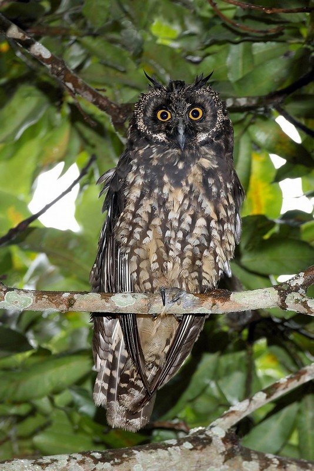
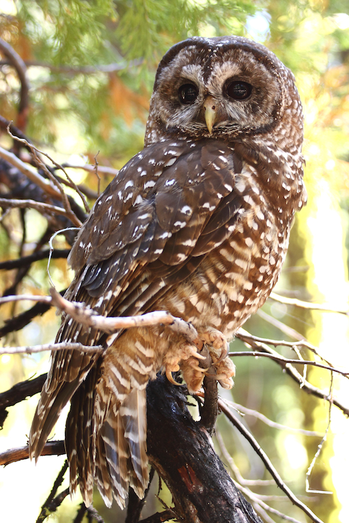
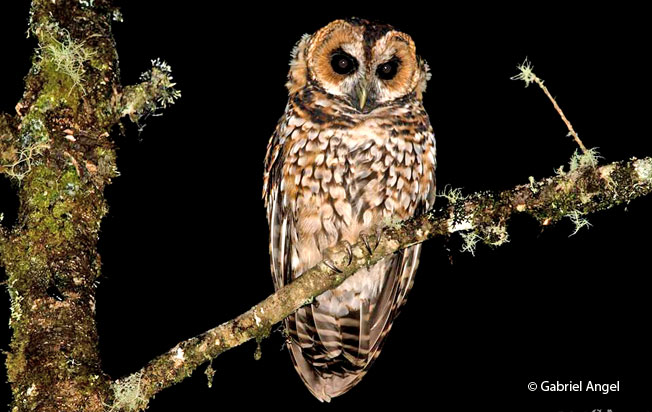

BIENVENIDOS
Parque Condor
Bienvenidos al centro de aves rapaces, una iniciativa de la Fundación Parque Cóndor, una organización sin fines de lucro. En este centro, nuestro principal objetivo es fomentar la educación ambiental y el rescate de aves. Todas las aves que se encuentran en nuestro parque han sido rescatadas de sitios inadecuados, donadas por otros centros o entregadas por el Ministerio del Ambiente, y ninguna ha sido separada directamente de su hábitat por el Parque Cóndor. Además de nuestro compromiso con la protección y el rescate de las aves, hemos colaborado con instituciones de renombre, como la Embajada de los Países Bajos, Adlerwarte Berlebeck y la fundación holandesa "Doen" (Postcode Loterij). Esto nos permite llevar a cabo nuestra labor de manera más efectiva y brindarles a nuestras aves el cuidado que merecen. En el Centro de Aves Rapaces, los visitantes pueden aprender sobre la importancia de la conservación de las aves y su papel en el ecosistema. También pueden observar de cerca a estas increíbles criaturas en su entorno natural, lo que proporciona una experiencia única y enriquecedora. Gracias por visitarnos en el Centro de Aves Rapaces. Esperamos que su experiencia aquí sea informativa y memorable.
Sonido de un condor
ACERCA DEL PARQUE
Otavalo-Imbabura
Somos organización sin fines de lucro, comprometida con la protección, rescate y rehabilitación de aves rapaces, buitres y búhos. En nuestro trabajo, nos enfocamos en la posible re-introducción de estas aves a su hábitat natural. Nuestra misión es crear conciencia sobre los problemas ambientales y su impacto en la sociedad, utilizando como base al cóndor andino, búhos, aves rapaces y su entorno como indicadores y símbolos relevantes de la cultura andina. Además de nuestras actividades de protección y rescate, llevamos a cabo proyectos de educación ambiental para establecer conexiones significativas entre estas aves y la sociedad. También promovemos el ecoturismo como una forma de auto-financiamiento para nuestra organización. ¡Únete a nosotros en nuestra misión de proteger y preservar la vida silvestre!
ACTIVIDADES
-EXHIBICIOBES DE VUELO-
11:30 Y 13:30
DE MIERCOLES A DOMINGOS
GALERÍA
| AVE | DESCRIPCIÓN | ALIMENTACION |
|---|---|---|
|  | Búho Estigio
Pájaro escaso en Ecuador, habita los bosques abiertos en lazona andina. |
|
|  | Búho MoteadoHabita en los bosques tropicales y sub-tropicales desde |
|
|  | Búho RufibandeadoAve muy nocturno de bosques subtropicales y templados, a |
|